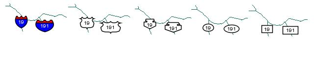

|
|||||||||||
| PREV CLASS NEXT CLASS | FRAMES NO FRAMES | ||||||||||
| SUMMARY: NESTED | FIELD | CONSTR | METHOD | DETAIL: FIELD | CONSTR | METHOD | ||||||||||
java.lang.Object
|
+--com.esri.mo2.map.draw.BaseSymbol
|
+--com.esri.mo2.map.draw.BaseFontSymbol
|
+--com.esri.mo2.map.draw.BaseTextSymbol
|
+--com.esri.mo2.map.draw.SimpleShieldSymbol
Provides a simple symbol for adding roadway shield symbols to a map. There are five shield types: Interstate UsRoad Rectangle Oval Mexican. The symbol supports next attrites:
Antialiasing can be true or false, default is false.
Transparency is transparency from 0.0 to 1.0, default is 1.0
Font is font for textstring, default is "Dialog" PLAIN and 12 height.
Color is textstring color, default is black.
Outline is color for border around each letter, default is null (no outline).
Glowing is color for glowing around the textstring, default is null (no glowing).
Shadow is color for shadow behind the textstring, default is null (no shadow).
BlockOut is color of background box drawing around the textstring, default is null (no blockout).
FeatureWeight, LabelWeight, LabelBufferRatio, HowManyLabels, LabelPriorities.
RotationalAngles, LineLabelPosition have a special mean, see LabelEngine for details.
Type can one of the five shield types: Interstate, UsRoad, Rectangle, Oval, Mexican, default is Interstate. MinSize and LabelMode is not implemented. There is example how to use it:
SimpleShieldSymbol ssSymbol = new SimpleShieldSymbol();

spSymbol.setType(SIMPLESHIELD_USROAD); // default value is SIMPLESHIELD_INTERSTATE.
| Field Summary | |
static int |
DEFAULT_LABELMODE
This constant defines the default label mode. |
static int |
DEFAULT_MINSIZE
This constant defines the value of minzise. |
static int |
DEFAULT_TYPE
This constant defines the default type of shield. |
static int |
SIMPLESHIELD_INTERSTATE
This constant defines the Interstate shield. |
static int |
SIMPLESHIELD_MEXICAN
This constant defines the mexican shield. |
static int |
SIMPLESHIELD_OVAL
This constant defines the oval shield. |
static int |
SIMPLESHIELD_RECT
This constant defines the rectangle shield. |
static int |
SIMPLESHIELD_USROAD
This constant defines the USRoad shield. |
| Fields inherited from class com.esri.mo2.map.draw.BaseFontSymbol |
DEFAULT_BLOCKOUT, DEFAULT_COLOR, DEFAULT_FONT, DEFAULT_GLOWING, DEFAULT_OUTLINE, DEFAULT_SHADOW, LABELMODE_FULL, LABELMODE_NUMERICONLY, PRINTMODE_ALLOWER, PRINTMODE_ALLUPPER, PRINTMODE_NONE, PRINTMODE_PRETTYPRINT, PRINTMODE_TITLECAPS |
| Fields inherited from class com.esri.mo2.map.draw.BaseSymbol |
DEFAULT_ANTIALIASING, DEFAULT_TRANSPARENCY |
| Constructor Summary | |
SimpleShieldSymbol()
The Constructor creates the SimpleShieldSymbol with default Interstate mode. |
|
| Method Summary | |
void |
draw(String text,
double x,
double y,
double angle,
Graphics2D g2,
FeatureGeometry fg)
This method is called by a label engine to render a label. |
int |
getLabelMode()
Obtains the label mode. |
int |
getLineLabelPosition()
Obtains the lineLabelPosition value. |
int |
getMinSize()
Obtains the MinSize value. |
int[] |
getRotationalAngles(String stringAngles)
The method always returns a list of zero angles. |
String |
getRotationalAnglesAsString()
The method returns a comma-separated list of zero angles. |
int |
getType()
Obtains the shield type. |
void |
prepare(String text,
FeatureGeometry fg,
Transform transform)
This method provide the parameters for drawing. |
void |
setLabelMode(int labelmode)
Sets the label mode. |
void |
setMinSize(int minsize)
Sets the MinSize value. |
void |
setType(int type)
Sets the shield type. |
| Methods inherited from class com.esri.mo2.map.draw.BaseTextSymbol |
draw, getFeatureWeight, getHowManyLabels, getLabelBufferRatio, getLabelPriorities, getLabelPrioritiesAsString, getLabelWeight, getRotationalAngles, setFeatureWeight, setHowManyLabels, setLabelBufferRatio, setLabelPriorities, setLabelWeight, setLineLabelPosition, setRotationalAngles |
| Methods inherited from class com.esri.mo2.map.draw.BaseFontSymbol |
drawTextWithEffect, getBlockOut, getColor, getFont, getGlowing, getMaximumSymbolSize, getOutline, getShadow, getSizeTextWithEffect, intToStringLabelMode, intToStringPrintMode, intToStringStyle, setBlockOut, setColor, setFont, setGlowing, setOutline, setShadow, stringToIntLabelMode, stringToIntPrintMode, stringToIntStyle, stringToNewMode |
| Methods inherited from class com.esri.mo2.map.draw.BaseSymbol |
CalcCentroid, clone, filterShadowImage, filterTransparentImage, getAntialiasing, getFieldCount, getFieldName, getRenderer, getTransparency, hasTransparency, setAntialiasing, setRenderer, setTransparency, switchTransform |
| Methods inherited from class java.lang.Object |
equals, finalize, getClass, hashCode, notify, notifyAll, toString, wait, wait, wait |
| Methods inherited from interface com.esri.mo2.map.draw.TextSymbol |
getBlockOut, getColor, getFont, getGlowing, getOutline, getShadow, setBlockOut, setColor, setFont, setGlowing, setOutline, setShadow |
| Methods inherited from interface com.esri.mo2.map.draw.Symbol |
clone, getAntialiasing, getFieldCount, getFieldName, getRenderer, getTransparency, hasTransparency, setAntialiasing, setRenderer, setTransparency |
| Field Detail |
public static final int SIMPLESHIELD_INTERSTATE
public static final int SIMPLESHIELD_USROAD
public static final int SIMPLESHIELD_RECT
public static final int SIMPLESHIELD_OVAL
public static final int SIMPLESHIELD_MEXICAN
public static final int DEFAULT_TYPE
public static final int DEFAULT_LABELMODE
public static final int DEFAULT_MINSIZE
| Constructor Detail |
public SimpleShieldSymbol()
| Method Detail |
public void prepare(String text,
FeatureGeometry fg,
Transform transform)
text - is a textstring to be drawingfg - is feature geometry to be labeledtransform - is transform object to describe the current map transformTextSymbol.prepare(java.lang.String, com.esri.mo2.cs.geom.FeatureGeometry, com.esri.mo2.cs.geom.Transform)
public void draw(String text,
double x,
double y,
double angle,
Graphics2D g2,
FeatureGeometry fg)
text - the label textx - the x coordinate locationy - the y coordinate locationangle - the angleg2 - the graphic contextfg - the feature locationTextSymbol.draw(java.lang.String, double, double, double, java.awt.Graphics2D, com.esri.mo2.cs.geom.FeatureGeometry)public int[] getRotationalAngles(String stringAngles)
stringAngles - ignored
public String getRotationalAnglesAsString()
getRotationalAnglesAsString in interface TextSymbolgetRotationalAnglesAsString in class BaseTextSymbolpublic void setType(int type)
type - is the shield typepublic int getType()
public void setLabelMode(int labelmode)
labelmode - is the label modepublic int getLabelMode()
public void setMinSize(int minsize)
minsize - is the MinSize valuepublic int getMinSize()
public int getLineLabelPosition()
getLineLabelPosition in interface TextSymbolgetLineLabelPosition in class BaseTextSymbolLabelEngine.LE_PLACEONTOP
|
|||||||||||
| PREV CLASS NEXT CLASS | FRAMES NO FRAMES | ||||||||||
| SUMMARY: NESTED | FIELD | CONSTR | METHOD | DETAIL: FIELD | CONSTR | METHOD | ||||||||||